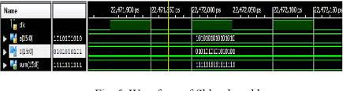

PROJECTS
In my B.tech I have done two projects:
Mini project
Major Project
Mini Project
Title :Iot Based On Blind Stick
Description :This project is based on Internet Of Things.And this projet is based on blind people with
this stick blind people can servive without another person.In this project we use Embedded C Language.
This blind stict detects the abstacles infront of the person.

Major Project
Title :Implementation Of Optimised Digital Filters Using Sklansky And Kogge Stone Adders
Description :This project is based on VLSI.In this projet implementing the FIR filters using Kogge Stone and
Sklansky adders.FIR filtersare the System that performs the mathematical operations.

Back Next